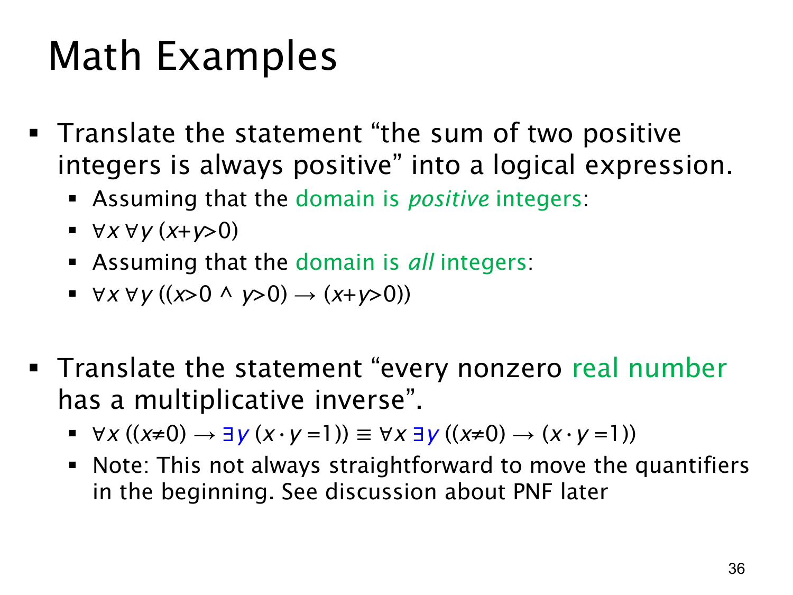

L1.2 · 第 36 页讲解原文
查看这一页课件

数学语句的量词翻译与论域选择
本页把两句常见数学陈述写成谓词逻辑，并展示论域不同，公式写法也不同。
第一句是“两个正整数之和总是正的”。若 x,y 的论域已经限定为正整数，直接写
∀x∀y(x+y>0).
若论域改为所有整数，就要把“两个数都为正”写在前件里：
∀x∀y((x>0∧y>0)→(x+y>0)).
不满足前件的整数对不属于原句所谈的“两个正整数”，所以不能要求这些数对的和也为正。受限全称命题使用蕴含，正是第 15 页的规则。
第二句是“每个非零实数都有乘法逆元”。以实数为论域，写成
∀x(x=0→∃y(xy=1)).
对每个非零的 x，可取 y=1/x；x=0 不在要求范围内。页上还把它改写成
∀x∃y(x=0→xy=1).
在此处两式等价：y 不出现在前件 x=0 中，而且实数论域非空。若 x=0，两式都要求找一个 xy=1 的 y；若 x=0，前件为假，第二式也总可从非空论域选一个 y 让条件句成立。
最后的提示说，把量词全部移到公式开头并非总能直接照搬这种步骤；后面讨论的 PNF（前束范式）会说明如何正确处理作用域、变量与等价变形。